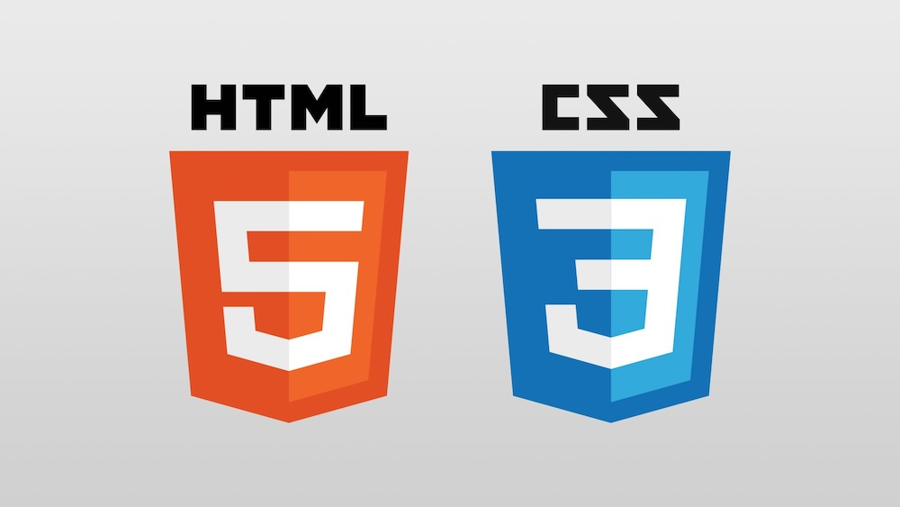
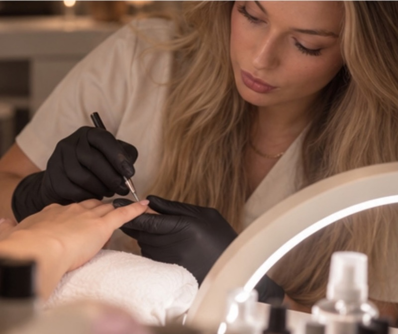
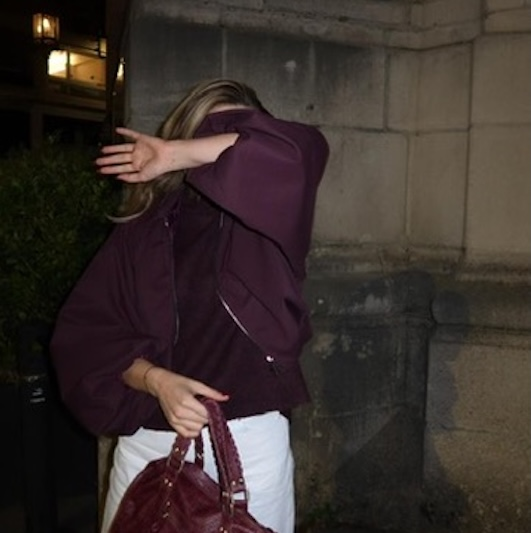

Mijn portfolio
User Interfaces - HTML & CSS
Een website die ik tijdens de opleiding ontwikkel, die zal worden gebruikt als portfolio.
Hallo, ik ben Charlotte Driezen
Welkom op mijn portfolio!
Met deze website wil ik je graag laten kennismaken met wie ik ben, wat ik doe en wat ik tijdens mijn opleiding allemaal leer. Je vindt hier meer info over mezelf, mijn achtergrond en de projecten waaraan ik werk.

Ontdek de projecten waaraan ik gewerkt heb.

User Interfaces - HTML & CSS
Een website die ik tijdens de opleiding ontwikkel, die zal worden gebruikt als portfolio.

Mijn naam is Charlotte en ik studeer Graduaat Programmeren aan Thomas More. Ik ben iemand die graag bijleert, uitdagingen graag aangaat en voortdurend zoekt naar manieren om mezelf te verbeteren. Wanneer iets mijn interesse wekt, wil ik er echt alles over weten.
Oorspronkelijk kom ik uit de schoonheidssector. Naast mijn studies heb ik ook mijn eigen schoonheidsinstituut, Skinic. Door mijn ervaring als ondernemer heb ik geleerd om zelfstandig te werken, verantwoordelijkheid te nemen en vooral goed na te denken over wat klanten écht nodig hebben.
Hoewel programmeren op het eerste gezicht misschien weinig met de schoonheidssector te maken heeft, merk ik dat ik mijn ervaring en creativiteit ook hier goed kan gebruiken.
Ik denk dat mijn grootste sterkte de combinatie is van analytisch denken, creativiteit en doorzettingsvermogen.
Ik wil niet alleen begrijpen hoe iets werkt, maar ook waarom het op een bepaalde manier wordt opgebouwd. Wanneer ik programmeer, vind ik het belangrijk dat mijn code zo logisch en overzichtelijk mogelijk is. Ik probeer problemen stap voor stap aan te pakken en zoek graag naar oplossingen die niet alleen werken, maar ook op een slimme manier zijn uitgewerkt.
Daarnaast heb ik oog voor detail. Ik denk graag na over hoe verschillende onderdelen op elkaar aansluiten en hoe ik een technisch correcte oplossing kan combineren met een aangename gebruikerservaring.
Dat is ook wat ik met deze website wil laten zien: dat praktisch en mooi perfect samengaan.
Ik ben kritisch voor mijn eigen werk en leg de lat graag hoog. Hoewel ik nog aan het begin van mijn opleiding sta, wil ik mezelf blijven uitdagen en mijn vaardigheden voortdurend verder ontwikkelen.
Voor ik aan deze opleiding begon, heb ik al heel wat werkervaring opgedaan.
Benieuwd naar mijn achtergrond? Op mijn CV vind je een overzicht van mijn opleidingen, werkervaring en vaardigheden.